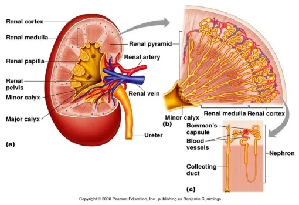
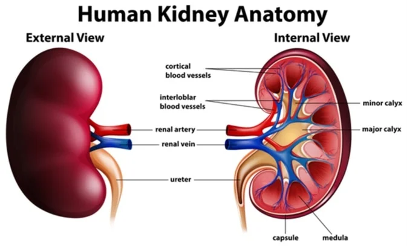
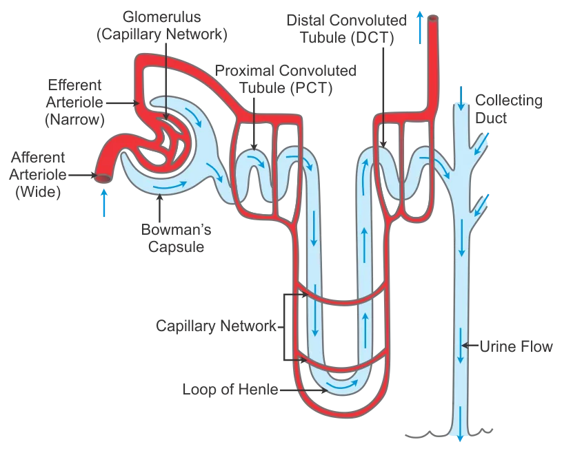
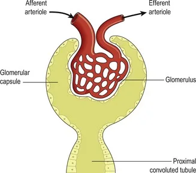
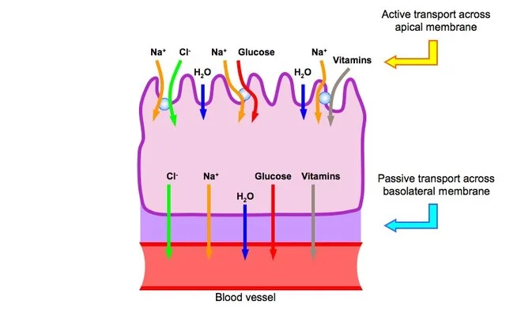
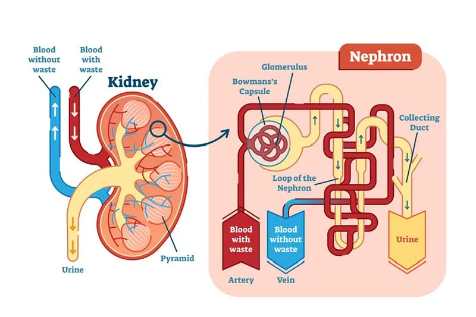
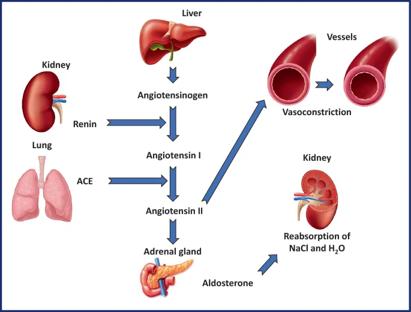
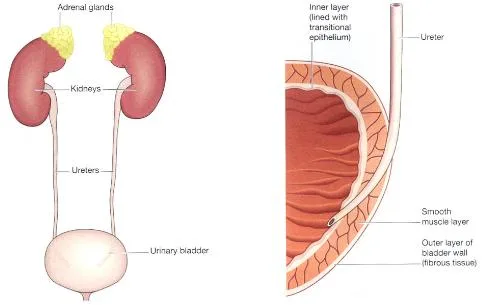

Expanded Nursing Uganda Explanation
Anatomy and Physiology of the Renal System should be understood beyond a short definition. Link the concept to patient history, focused assessment, common risks, nursing priorities, documentation and evaluation of outcomes.
Contents — 13 sections (tap to expand)
01 ANATOMY AND PHYSIOLOGY OF THE RENAL SYSTEM
The urinary system is the main excretory system eliminating waste products from blood through urine. Its anatomy consists of two kidneys , each joined to the bladder by the tube called ureter , which conveys urine from the kidneys to the bladder for storage. Following bladder contraction, urine is expelled through the urethra .
Organs of the Urinary System
2 Kidneys : These bean-shaped organs are the primary functional units of the urinary system. They are responsible for:
- Filtering blood to remove waste products, excess water, and electrolytes.
- Secreting urine, the fluid waste product.
- Regulation of blood pressure and red blood cell production.
2 Ureters : These muscular tubes transport urine from the kidneys to the urinary bladder. Peristaltic contractions of the ureter walls help move urine along.
Urinary Bladder: This hollow, muscular organ serves as a reservoir for urine. It expands to store urine and contracts to expel it during urination.
Urethra : This tube conveys urine from the urinary bladder to the outside of the body. It differs in length and function between males and females. In males, it also serves as a passageway for semen.
The urinary system plays a vital role in maintaining homeostasis by:
- Regulating fluid volume : The kidneys adjust the amount of water reabsorbed into the bloodstream, thereby controlling blood volume and blood pressure.
- Controlling electrolyte balance : The kidneys regulate the levels of various electrolytes, such as sodium, potassium, and calcium, in the blood.
- Maintaining acid-base balance: The kidneys help regulate blood pH by excreting acids and bases as needed.
The kidneys produce urine that contains:
- Metabolic waste products : These include nitrogenous compounds like urea (from protein metabolism) and uric acid (from nucleic acid metabolism).
- Excess ions : such as sodium, potassium, and chloride.
- Various toxins and drugs : The kidneys filter out many foreign substances from the blood.
Urine is stored in the bladder until a sufficient volume accumulates, triggering the urge to urinate. Excretion of urine occurs through a coordinated process called micturition ( urination or voiding ). This involves:
- Relaxation of the internal urethral sphincter (involuntary control).
- Contraction of the detrusor muscle (the bladder’s muscular wall).
- Relaxation of the external urethral sphincter (voluntary control).
Main Functions of the Kidneys (Expanded)
- Formation of Urine : This involves three main processes:
- Glomerular filtration : Water and small solutes are filtered from the blood into the Bowman’s capsule.
- Tubular reabsorption : Essential substances (e.g., glucose, amino acids, water, electrolytes) are reabsorbed from the filtrate back into the blood.
- Tubular secretion: Waste products and excess ions are secreted from the blood into the filtrate.
- Maintaining Water, Electrolyte, and Acid-Base Balance : The kidneys constantly adjust the composition of urine to maintain the proper balance of these factors in the body.
- Excretion of Waste Products : The kidneys eliminate metabolic waste products, toxins, and drugs from the body.
- Production and Secretion of Erythropoietin : This hormone stimulates the bone marrow to produce red blood cells in response to low oxygen levels in the blood.
- Production and Secretion of Renin : This enzyme plays a crucial role in the renin-angiotensin-aldosterone system (RAAS), which regulates blood pressure and electrolyte balance.
COMMON TERMS IN URINARY SYSTEM
- Proteinuria : Daily excretion of proteins in the urine is more than 150mg. It signifies that the kidney is damaged/ perforated.
- Haematuria : Means passing urine containing blood and is due to bleeding into the urinary tract.
- Crystalluria : Presence of crystals like oxalates, phosphates in the urine detected by microscopic examination of urine
- Glycosuria : Means presence of sugar (glucose) in urine either due to diabetes mellitus or due to renal glycosuria
- Azotemia : Increase in the serum concentration of urea and creatinine above their normal values. This occurs when glomerular filtration pressure (GFR) of the kidneys falls due to renal failure. “uremia”.
- Oliguria : Diminished urine volume output of urine i.e. 100 mL to 400 mL per day.
- Anuria – Complete absence of urine formation i.e zero to 100 mL per day
- Dysuria – Difficulty or pain in passing urine
- Polyuria – Urine volume above 3 litres per day
- Retention of urine – occurs due to obstruction of urine outflow from the bladder, this is relieved by catheterization
02 The Kidneys
There are two kidneys which lie behind the peritoneum on either side of the vertebral column. In adults, they measure approximately 12 to 14 cm.
The urine is formed in the kidney by the nephrons.
Each kidney has approximately one million nephrons.
The right kidney sits slightly lower than the left kidney . This difference in position is mainly attributed to the presence of the liver , which occupies substantial space on the right side of the abdominal cavity and pushes the right kidney inferiorly.
Kidneys are bean-shaped organs with approximate dimensions of 11 cm in length, 6 cm in width, and 3 cm in thickness. Each kidney weighs around 150 grams. They are embedded within a protective layer of fat, which helps to cushion and hold them in place.
The kidneys and the surrounding renal fat are enclosed by a sheath of fibrous connective tissue called the renal fascia ( Gerota’s fascia ). This fascia provides further support and helps anchor the kidneys to the posterior abdominal wall.
Organ Relationships
The kidneys are closely associated with several other organs in the abdominal cavity. These relationships are important for understanding potential clinical implications:
Right Kidney:
- Superiorly : The right adrenal gland (also known as the suprarenal gland) sits atop the kidney.
- Anteriorly : The right lobe of the liver, the duodenum (the first part of the small intestine), and the hepatic flexure of the colon are located in front of the right kidney.
- Posteriorly : The diaphragm and the muscles of the posterior abdominal wall (such as the quadratus lumborum and psoas major) lie behind the right kidney.
Left Kidney:
- Superiorly : The left adrenal gland is positioned above the left kidney.
- Anteriorly : The spleen, stomach, pancreas, jejunum (another part of the small intestine), and the splenic flexure of the colon are located in front of the left kidney.
- Posteriorly : Similar to the right kidney, the diaphragm and the muscles of the posterior abdominal wall are behind the left kidney.
Internal Anatomy
The internal structure of the kidney is complex and highly organized, reflecting its critical role in urine formation. Key features include:
- Renal Cortex : This is the outer, reddish-brown layer of tissue directly beneath the fibrous capsule. It contains the renal corpuscles (glomeruli and Bowman’s capsules) and the convoluted tubules, which are essential for filtration and reabsorption.
- Renal Medulla : This is the inner layer, composed of pale, cone-shaped striations called renal pyramids.
- Renal Pyramids : These are triangular structures within the medulla. Their base faces the cortex, and their apex (the renal papilla) projects into a minor calyx. The pyramids consist mainly of collecting ducts and loops of Henle, which concentrate urine.
- Renal Columns (Columns of Bertin) : These are extensions of the renal cortex that extend inward between the renal pyramids. They provide a pathway for blood vessels and nerves to reach the cortex.
- Renal Papilla : This is the narrow, tip of each renal pyramid. It is where the collecting ducts empty urine into the minor calyces.
- Calyces (Minor and Major) : These are cup-shaped structures that collect urine from the renal papillae. Several minor calyces merge to form a major calyx.
- Renal Pelvis: This is a funnel-shaped structure formed by the merging of two or three major calyces. It collects urine and narrows as it exits the kidney as the ureter. The walls of the calyces and renal pelvis are lined with transitional epithelium, which is well-suited to withstand the changes in volume and composition of urine. The walls also contain smooth muscle, which contracts to propel urine.
- Hilum : This is the concave medial border of the kidney where the renal artery, renal vein, lymphatic vessels, nerves, and ureter enter and exit the kidney.
Urine formation begins in the nephrons (the functional units of the kidney) located in the cortex and medulla. After the urine is formed, it follows a specific pathway:
- From the collecting ducts within the renal pyramids.
- Through the renal papilla at the apex of the pyramid.
- Into a minor calyx.
- Several minor calyces merge into a major calyx.
- Two or three major calyces combine to form the renal pelvis.
- The renal pelvis narrows and becomes the ureter as it leaves the kidney.
Peristalsis, the intrinsic contraction of smooth muscle in the walls of the calyces, renal pelvis, and ureters, propels urine towards the bladder.
The kidneys perform numerous vital functions to maintain overall health:
1. Filtration of Blood Plasma and Elimination of Wastes :
- The kidneys filter blood plasma to remove metabolic waste products such as urea, creatinine, uric acid, and toxins.
- This filtration process occurs in the glomeruli, where high pressure forces fluid and small solutes out of the blood and into Bowman’s capsule.
2. Regulation of Blood Volume and Blood Pressure :
- The kidneys regulate blood volume by adjusting the amount of water reabsorbed into the bloodstream or excreted in urine.
- They also play a key role in the renin-angiotensin-aldosterone system (RAAS), which helps to control blood pressure by regulating sodium and water balance.
3. Regulation of Fluid Osmolarity:
- The kidneys maintain the osmolarity (solute concentration) of body fluids by controlling the amount of water and electrolytes excreted in urine.
- This is crucial for preventing cells from swelling or shrinking due to changes in fluid balance.
4. Secretion of Renin:
- Renin is an enzyme secreted by the kidneys that initiates the RAAS pathway.
- This pathway leads to the production of angiotensin II, which causes vasoconstriction (narrowing of blood vessels) and stimulates the release of aldosterone, a hormone that increases sodium and water reabsorption.
5. Secretion of Erythropoietin (EPO):
- EPO is a hormone produced by the kidneys in response to low oxygen levels in the blood (hypoxia).
- EPO stimulates the bone marrow to produce more red blood cells, increasing the oxygen-carrying capacity of the blood.
6. Regulation of PCO2 and Acid-Base Balance:
- The kidneys help regulate blood pH by excreting acids (such as hydrogen ions) and bases (such as bicarbonate ions) in urine.
- They also work with the respiratory system to maintain the proper balance of carbon dioxide (PCO2) in the blood.
7. Synthesis of Calcitriol (Vitamin D):
- The kidneys convert a precursor molecule into calcitriol, the active form of vitamin D.
- Calcitriol promotes calcium absorption from the intestines, which is essential for bone health and other bodily functions.
8. Detoxification of Free Radicals and Drugs:
- The kidneys help to eliminate free radicals (unstable molecules that can damage cells) and detoxify certain drugs.
- They contain enzymes that can neutralize free radicals and convert drugs into forms that can be excreted in urine.
9. Gluconeogenesis:
- During prolonged fasting or starvation, the kidneys can synthesize glucose from amino acids and other non-carbohydrate sources through a process called gluconeogenesis.
- This helps to maintain blood glucose levels when carbohydrate intake is limited.
03 The Nephron: Functional Unit of the Kidney
Each kidney contains approximately 1 to 2 million functional units called nephrons , alongside a significantly smaller number of collecting ducts.
The nephron is responsible for the actual filtration , reabsorption , and secretion processes that lead to urine formation .
These are the functional (urine) forming units of the kidneys
The collecting ducts serve to transport urine through the renal pyramids to the calyces, contributing to the characteristic striped appearance of the pyramids.
Supporting the collecting ducts is connective tissue, housing blood vessels, nerves, and lymphatic vessels, which are essential for the function and maintenance of these structures.
Nephron Structure
Essentially, a nephron consists of a tubule closed at one end and connected to a collecting duct at the other. The closed end forms the glomerular capsule ( Bowman’s capsule ), a cup-shaped structure that almost entirely encloses the glomerulus, a network of tiny arterial capillaries.
The glomerulus is a cluster of capillary loops resembling a coiled tuft.
Extending from the glomerular capsule, the nephron tubule measures approximately 3 cm in length and comprises three main parts:
- Proximal Convoluted Tubule (PCT): This is the initial, coiled portion of the nephron tubule extending from the Bowman’s capsule, primarily responsible for reabsorbing water, ions, and nutrients from the filtrate.
- Medullary Loop (Loop of Henle) : This hairpin-shaped structure dips into the renal medulla and plays a critical role in concentrating urine. It consists of a descending limb (permeable to water) and an ascending limb (actively transports sodium chloride).
- Distal Convoluted Tubule (DCT) : This is the final, coiled portion of the nephron tubule, responsible for further reabsorption of ions and water under hormonal control. It empties into a collecting duct.
The collecting ducts ultimately merge to form larger ducts, which then empty into the minor calyces.
Renal Blood Supply
The kidneys receive approximately 20% of the cardiac output, reflecting their critical role in filtering the blood.
Upon entering the kidney at the hilum, the renal artery branches into smaller arteries and arterioles.
In the cortex, an afferent arteriole enters each glomerular capsule and then subdivides into a cluster of tiny arterial capillaries, forming the glomerulus.
Nestled between these capillary loops are connective tissue phagocytic mesangial cells, which form a crucial part of the monocyte-macrophage defense system, responsible for clearing debris and regulating glomerular filtration.
The blood vessel exiting the glomerulus is the efferent arteriole .
The afferent arteriole possesses a larger diameter than the efferent arteriole , which elevates the pressure inside the glomerulus and facilitates filtration across the glomerular capillary walls.
The efferent arteriole then branches into a second peritubular capillary network, which surrounds the remainder of the tubule, facilitating exchange between the fluid in the tubule and the bloodstream, maintaining a local supply of oxygen and nutrients, and removing waste products.
Venous blood drains from this capillary bed into the renal vein, which ultimately empties into the inferior vena cava .
The walls of the glomerulus and the glomerular capsule are composed of a single layer of flattened epithelial cells. The glomerular walls exhibit greater permeability compared to those of other capillaries. The remainder of the nephron and the collecting duct are formed by a single layer of simple squamous epithelium.
Both sympathetic and parasympathetic nerves supply the renal blood vessels.
This dual innervation allows for precise control of renal blood vessel diameter and renal blood flow, independent of autoregulation mechanisms.
04 Processes Involved in urine formation
Urine formation involves three primary processes:
- Filtration:
- Selective Reabsorption:
- Secretion:
Filtration occurs across the semipermeable membrane formed by the glomerulus and Bowman’s capsule . Water and small solutes readily pass through this membrane, while larger molecules like blood cells and plasma proteins are retained in the capillaries.
The resulting filtrate closely resembles plasma in composition but lacks the larger proteins and blood cells.
The driving force for filtration is the pressure gradient between the blood pressure in the glomerulus and the pressure within Bowman’s capsule.
The glomerular capillary hydrostatic pressure (HPA) is maintained at approximately 7.3 kPa (55 mmHg) due to the efferent arteriole being narrower than the afferent arteriole.
This pressure is opposed by:
- The osmotic pressure of the blood (OPB), mainly due to plasma proteins, which is approximately 4 kPa (30 mmHg) .
- The filtrate hydrostatic pressure (HPF) within Bowman’s capsule, which is approximately 2 kPa (15 mmHg) .
Net Filtration Pressure (NFP)
The net filtration pressure (NFP) determines the overall rate of filtration. It is calculated as follows:
NFP = HPA – (OPB + HPF)
Using the values above:
NFP = 55 mmHg – (30 mmHg + 15 mmHg) = 10 mmHg
This positive net filtration pressure of 10 mmHg forces fluid and solutes out of the glomerular capillaries and into Bowman’s capsule.
Glomerular Filtration Rate (GFR)
The glomerular filtration rate (GFR) is the volume of filtrate formed by both kidneys per minute.
In a healthy adult, the GFR is approximately 125 mL/min, which equates to 180 liters of filtrate produced by the two kidneys each day.
Remarkably, most of this filtrate is reabsorbed later in the kidney tubules, with less than 1% (1-1.5 liters) being excreted as urine.
The differences in volume and concentration between the initial filtrate and the final urine are due to the processes of selective reabsorption and tubular secretion.
Autoregulation of GFR
Renal blood flow and, consequently, glomerular filtration are protected by a mechanism called autoregulation . Autoregulation maintains a relatively constant renal blood flow across a wide range of systolic blood pressures (approximately 80-200 mmHg).
Autoregulation operates independently of nervous control, meaning it continues to function even if the nerve supply to the renal blood vessels is disrupted.
This mechanism is inherent to the renal blood vessels and may be stimulated by changes in blood pressure within the renal arteries or by fluctuations in the levels of certain metabolites, such as prostaglandins.
However, in cases of severe shock , when systolic blood pressure falls below 80 mmHg, autoregulation fails , and renal blood flow and hydrostatic pressure decrease, impairing filtration within the glomeruli.
Selective reabsorption is the process by which substances are transported from the filtrate back into the blood.
Most reabsorption occurs in the proximal convoluted tubule (PCT) , whose walls are lined with microvilli to increase the surface area for absorption . Many substances are reabsorbed here, including water, electrolytes (sodium, potassium, chloride, etc.), and organic nutrients (glucose, amino acids).
Reabsorption can occur through passive or active transport mechanisms:
- Passive Transport: This involves the movement of substances across the tubular membrane down their concentration or electrochemical gradient, without requiring cellular energy. Examples include the diffusion of water and the movement of certain ions along an electrical gradient.
- Active Transport: This involves the movement of substances across the tubular membrane against their concentration or electrochemical gradient, requiring the expenditure of cellular energy (usually ATP). Active transport often involves carrier proteins that bind to the substance and facilitate its movement across the membrane. Examples include the reabsorption of glucose, amino acids, and certain ions like sodium.
Only 60-70% of the original filtrate reaches the loop of Henle . A significant portion of water, sodium, and chloride is reabsorbed in the loop, reducing the volume of filtrate entering the distal convoluted tubule (DCT) to 15-20% of the original amount. This dramatically changes the filtrate’s composition.
The distal convoluted tubule (DCT) reabsorbs more electrolytes , particularly sodium, making the filtrate entering the collecting ducts quite dilute.
The primary function of the collecting ducts is to reabsorb as much water as the body needs, depending on the body’s hydration state and hormonal influences.
Transport Maximum (Tm) or Renal Threshold
Active transport is mediated by carrier proteins in the epithelial membrane. These proteins have a limited capacity to bind and transport substances. The kidneys’ maximum capacity for reabsorption of a substance is known as the transport maximum (Tm) or renal threshold .
For example , the normal blood glucose level ranges from 3.5 to 8 mmol/L (63 to 144 mg/100 mL). If the blood glucose level exceeds the transport maximum (Tm) of approximately 9 mmol/L (160 mg/100 mL), glucose will appear in the urine . This occurs because all available carrier sites are occupied, and the active transport mechanism is overloaded. This condition is known as glucosuria .
Other substances reabsorbed by active transport include sodium , calcium , potassium , phosphate , and chloride .
The transport maximum, or renal threshold, of some substances varies depending on the body’s needs at a particular time. In some cases, reabsorption is regulated by hormones.
Hormonal Regulation of Selective Reabsorption
Several hormones influence selective reabsorption in the nephron:
- Parathyroid Hormone (PTH) : Secreted by the parathyroid glands, PTH, along with calcitonin from the thyroid gland, regulates the reabsorption of calcium and phosphate in the distal convoluted tubules and collecting ducts . PTH increases blood calcium levels, while calcitonin lowers them.
- Antidiuretic Hormone (ADH) (Vasopressin) : Secreted by the posterior pituitary, ADH increases the permeability of the distal convoluted tubules and collecting ducts to water, enhancing water reabsorption. ADH secretion is controlled by a negative feedback system that responds to changes in blood osmolarity and blood volume.
- Aldosterone : Secreted by the adrenal cortex, aldosterone increases the reabsorption of sodium and water and the excretion of potassium in the distal convoluted tubules and collecting ducts . Aldosterone secretion is regulated through the renin-angiotensin-aldosterone system (RAAS), a negative feedback system that responds to changes in blood pressure and sodium levels.
- Atrial Natriuretic Peptide (ANP): Secreted by the atria of the heart in response to stretching of the atrial walls when blood volume increases, ANP decreases reabsorption of sodium and water in the proximal convoluted tubules and collecting ducts. ANP secretion is also regulated by a negative feedback system.
Tubular secretion is the process by which substances are transported from the peritubular capillaries into the filtrate within the tubules .
Filtration occurs as blood flows through the glomerulus, but some substances may not be entirely filtered out of the blood due to the short time blood spends in the glomerulus.
Substances not required by the body and foreign materials , such as drugs like penicillin and aspirin , are cleared from the blood through tubular secretion .
Tubular secretion of hydrogen ions (H+) is crucial for maintaining normal blood pH by removing excess acid from the body.
Composition of Urine
- Appearance : Urine is typically clear and amber in color. The amber hue is due to the presence of urobilin, a bile pigment that is altered in the intestine, reabsorbed into the bloodstream, and then excreted by the kidneys.
- Specific Gravity : The specific gravity of urine ranges between 1.020 and 1.030. Specific gravity is a measure of the concentration of solutes in the urine.
- pH : The pH of urine is around 6, but the normal range is 4.5-8. This indicates that urine is typically slightly acidic.
Daily Volume and Variability:
- A healthy adult passes 1000 to 1500 mL of urine per day.
- The volume of urine produced and its specific gravity vary depending on fluid intake and the amount of solutes excreted.
Constituents of Urine:
Urine consists primarily of water , but it also contains various solutes . The approximate composition is:
- Water : 96%
- Urea : 2% (primary nitrogenous waste product of protein metabolism)
- Other Solutes (2%):
- Uric acid
- Creatinine
- Ammonia
- Sodium
- Potassium
- Chlorides
- Phosphates
- Sulfates
- Oxalates
05 Renin-Angiotensin-Aldosterone System (RAAS)
The RAAS is a critical hormonal system that regulates blood pressure, blood volume, and electrolyte balance (primarily sodium and potassium). Aldosterone, a hormone produced by the adrenal cortex, plays a key role in regulating sodium excretion in the urine.
Step-by-step breakdown of the RAAS:
Renin Release: Specialized cells in the afferent arteriole of the nephron (juxtaglomerular cells) release the enzyme renin into the bloodstream. Renin release is triggered by:
- Sympathetic nervous system stimulation
- Low blood volume
- Low arterial blood pressure
Angiotensinogen Conversion: Renin acts on angiotensinogen, a plasma protein produced by the liver. Renin converts angiotensinogen into angiotensin I.
Angiotensin-Converting Enzyme (ACE): Angiotensin-converting enzyme (ACE) is an enzyme primarily found in the lungs (but also in the proximal convoluted tubules and other tissues). ACE converts angiotensin I into angiotensin II.
Angiotensin II Effects:
- Angiotensin II is a potent vasoconstrictor: It causes the blood vessels to constrict, which increases blood pressure.
- Aldosterone Release : Angiotensin II stimulates the adrenal cortex to secrete aldosterone. Elevated blood potassium levels also stimulate aldosterone secretion.
- Sodium and Water Reabsorption: Aldosterone acts on the distal convoluted tubules and collecting ducts of the nephron to increase sodium reabsorption from the filtrate back into the bloodstream. Water follows sodium due to osmosis, so water reabsorption also increases.
- Blood Volume Increase : Increased sodium and water reabsorption leads to an increase in blood volume.
Negative Feedback: The increase in blood volume and blood pressure caused by the RAAS has a negative feedback effect:
- It reduces renin secretion from the juxtaglomerular cells, shutting down the RAAS pathway.
Additional Points about the RAAS:
- Potassium Balance: When aldosterone increases sodium reabsorption, it also increases potassium excretion in the urine. This is an important mechanism for maintaining potassium balance in the body. Elevated blood potassium levels directly stimulate aldosterone secretion, leading to potassium excretion.
- Hypokalemia : Profound diuresis (excessive urine production) can lead to hypokalemia (low blood potassium levels) because of increased potassium excretion.
Electrolyte Balance
Changes in the concentration of electrolytes in the body fluids may be due to changes in:
- The body water content, or
- Electrolyte levels. Several mechanisms maintain the balance between water and electrolyte concentration.
Calcium Balance
The regulation of calcium levels in the body is maintained by the combined actions of:
Parathyroid Hormone (PTH) : Secreted by the parathyroid glands, PTH increases blood calcium levels by:
- Stimulating the release of calcium from bone.
- Increasing calcium reabsorption in the kidneys.
- Indirectly increasing calcium absorption in the intestines (by activating vitamin D).
Calcitonin : Secreted by the thyroid gland, calcitonin lowers blood calcium levels by:
- Inhibiting the release of calcium from bone.
- Increasing calcium excretion in the kidneys.
06 Organs of the Urinary Tract
- Ureters
- Urinary bladder
- Urethra
The ureters are tubes that transport urine from the kidneys to the urinary bladder . They are approximately 25-30 cm long and have a diameter of about 3 mm .
The ureter is continuous with the funnel-shaped renal pelvis . It travels downward through the abdominal cavity, situated behind the peritoneum and in front of the psoas muscle . It then enters the pelvic cavity and passes obliquely through the posterior wall of the bladder.
Ureteral Anti-Reflux Mechanism:
- The oblique passage of the ureters through the bladder wall is crucial. As urine accumulates and the pressure within the bladder rises, the ureters are compressed, effectively closing the openings into the bladder.
- This arrangement prevents the backflow (reflux) of urine into the ureters (toward the kidneys) both as the bladder fills and during micturition (urination), when the muscular bladder wall contracts and pressure increases.
Ureter Structure:
The walls of the ureters are composed of three layers of tissue:
- Outer Layer (Fibrous Tissue) : An outer covering of fibrous tissue. Continuous with the fibrous capsule of the kidney.
- Middle Layer (Muscular Layer) : Consists of interlacing smooth muscle fibers that form a functional unit around the ureter. An additional outer longitudinal layer is present in the lower third of the ureter.
- Inner Layer (Mucosa) : Composed of transitional epithelium (urothelium). This type of epithelium is designed to stretch and accommodate changes in volume.
Ureter Function:
- Peristalsis : Peristalsis is an inherent property of the smooth muscle layer. It involves rhythmic contractions that propel urine along the ureter.
- Peristaltic Waves : Peristaltic waves occur several times per minute, increasing in frequency with the volume of urine produced. These waves send small spurts of urine along the ureter towards the bladder.
The urinary bladder serves as a reservoir for urine storage . It is situated in the pelvic cavity. Its size and position vary depending on the volume of urine it contains. When distended (full), the bladder rises into the abdominal cavity.
Urinary Bladder Structure:
- Shape : The bladder is roughly pear-shaped when empty, but it becomes more balloon-shaped as it fills with urine.
- Base and Neck: The posterior surface is the base. The bladder opens into the urethra at its lowest point, the neck.
- Peritoneum : The peritoneum covers only the superior surface of the bladder before it turns upward as the parietal peritoneum, lining the anterior abdominal wall. Posteriorly, it surrounds the uterus in females and the rectum in males.
The bladder wall is composed of three layers:
- Outer Layer (Connective Tissue) : A layer of loose connective tissue that contains blood vessels, lymphatic vessels, and nerves. The upper surface is covered by the peritoneum.
- Middle Layer (Detrusor Muscle) : Consists of interlacing smooth muscle fibers and elastic tissue arranged loosely in three layers. This muscle is called the detrusor muscle. When it contracts, it empties the bladder.
- Inner Layer (Mucosa): Composed of transitional epithelium. This epithelium readily permits distension of the bladder as it fills. When the bladder is empty, the inner lining is arranged in folds, or rugae, which gradually disappear as the bladder fills.
Bladder Capacity and Sensation : The bladder is distensible, but as it fills, awareness of the need to urinate is felt. The total capacity is rarely more than about 600 mL.
Trigone : The three orifices (openings) in the bladder wall form a triangle or trigone:
- The upper two orifices on the posterior wall are the openings of the ureters.
- The lower orifice is the opening into the urethra.
Internal Urethral Sphincter :
- The internal urethral sphincter is a thickening of the urethral smooth muscle layer in the upper part of the urethra, it controls outflow of urine from the bladder. This sphincter is under involuntary control.
The urethra is the canal that extends from the neck of the bladder to the external urethral orifice, allowing urine to exit the body .
- Length Difference (Male vs. Female) : The urethra is significantly longer in males than in females.
- Male Urethra : The male urethra serves dual functions: urinary and reproductive, as it transports both urine and semen.
Female Urethra:
- Length and Diameter : The female urethra is approximately 4 cm long and 6 mm in diameter.
- Location : It runs downward and forward behind the symphysis pubis.
- External Urethral Orifice : It opens at the external urethral orifice, located just in front of the vagina.
- External Urethral Sphincter : The external urethral orifice is guarded by the external urethral sphincter, which is under voluntary control.
Female Urethra Structure:
Layers: The wall of the female urethra has two main layers:
Outer Muscle Layer:
- Smooth Muscle : An inner layer of smooth muscle, which is under autonomic (involuntary) nerve control.
- Striated Muscle : An outer layer of striated (skeletal/voluntary) muscle surrounding the smooth muscle. This forms the external urethral sphincter.
Inner Mucosa:
- An inner lining of mucosa that is continuous with the mucosa of the bladder.
- Supported by loose fibroelastic connective tissue containing blood vessels and nerves.
- Epithelium: Proximally (near the bladder), it consists of transitional epithelium (urothelium). Distally (near the external orifice), it is composed of stratified squamous epithelium.
Micturition (Urination)
Micturition is the process of emptying the urinary bladder.
Infants :
- Stretch Receptors : Accumulation of urine in the bladder activates stretch receptors in the bladder wall.
- Afferent Impulses : These receptors generate sensory (afferent) impulses that are transmitted to the spinal cord.
- Spinal Reflex : A spinal reflex is initiated in the spinal cord.
- Detrusor Muscle Contraction : This stimulates involuntary contraction of the detrusor muscle (the bladder wall muscle).
- Internal Sphincter Relaxation : Simultaneously, there is relaxation of the internal urethral sphincter.
- Urine Expulsion : This results in the expulsion of urine from the bladder.
Developed Bladder Control (Adults):
- Micturition Reflex Stimulation: The micturition reflex is still stimulated as the bladder fills.
- Ascending Sensory Impulses : However, sensory impulses also pass upward to the brain, leading to an awareness of the need to urinate (typically around 300-400 mL in adults).
- Voluntary Control : Through learned and conscious effort, contraction of the external urethral sphincter and the muscles of the pelvic floor can inhibit micturition until it is convenient to urinate.
- Assisted Urination : Urination can be assisted by increasing pressure within the pelvic cavity. This is achieved by lowering the diaphragm and contracting the abdominal muscles.
- Overdistension : Overdistension of the bladder is extremely painful. In this state, there is a tendency for involuntary relaxation of the external sphincter to occur, allowing a small amount of urine to escape (provided there is no mechanical obstruction).
The Effects of Aging on the Urinary System
Aging brings about several changes in the urinary system:
Kidney Function:
- Nephron Decline : The number of nephrons declines with age.
- Glomerular Filtration Rate (GFR) Decrease : The glomerular filtration rate (GFR) falls, meaning the kidneys filter blood less efficiently.
- Tubular Function Decline: The renal tubules function less efficiently.
- Concentration Impairment : The kidneys become less able to concentrate urine. This makes older adults more susceptible to fluid balance issues, such as dehydration or fluid overload.
- Drug Elimination : Elimination of drugs also becomes less efficient, potentially leading to drug accumulation and toxicity.
Bladder Function:
- Urinary Frequency and Urgency (Detrusor Muscle Control Decline): The decreased control over the detrusor muscle often results in an urgent need to urinate and increased urinary frequency.
- Nocturia: Nocturia (the need to urinate frequently during the night) becomes increasingly common in older adults.
- Incontinence : Incontinence (the involuntary leakage of urine) is more prevalent in older adults, affecting a significant percentage of both men and women. These numbers tend to double as individuals reach advanced ages (85 years+).
Prostate Enlargement (Males):
- Benign Prostatic Hyperplasia (BPH) : Enlargement of the prostate gland (benign prostatic hyperplasia or BPH) is common in older men.
- Urinary Retention : BPH can cause retention of urine (difficulty completely emptying the bladder).
- Micturition Problems : It can also lead to various problems with micturition, such as a weak urine stream, straining to urinate, and frequent urination.
07 Common Deviations from Normal Structure and Function (Disorders)
When parts of the urinary system are not working normally, it can lead to a range of problems affecting waste removal, fluid balance, and urination.
08 Diseases of the Kidneys:
- Glomerulonephritis (GN): Inflammation or damage to the glomeruli (the filters in the nephrons). This can be caused by infections or autoimmune reactions. Damaged glomeruli may leak protein and blood into the urine (proteinuria and haematuria), and their filtering ability is reduced. Severe or chronic GN can lead to renal failure.
- Nephrotic Syndrome: Not a disease itself, but a set of symptoms (syndrome) caused by significant damage to the glomeruli, often due to GN or other conditions. Features: Large amounts of protein in the urine (marked proteinuria), low protein levels in the blood (hypoalbuminaemia), and widespread swelling (generalised oedema) due to fluid imbalance caused by low blood protein. Also high levels of fats in the blood.
- Diabetic Nephropathy: Kidney damage caused by diabetes mellitus. High blood sugar levels over time damage the blood vessels in the kidneys, especially the glomeruli. This leads to reduced kidney function and can progress to renal failure. Hypertension often worsens this condition.
- Hypertension and the Kidneys: High blood pressure can damage the small blood vessels in the kidneys, leading to reduced kidney function. Kidney disease can also cause or worsen high blood pressure (secondary hypertension).
- Kidney Infections (Pyelonephritis): Infection of the renal pelvis and kidney tissue, usually caused by bacteria travelling up from the bladder and ureters. Causes fever, loin pain, and can damage kidney tissue if not treated, potentially leading to chronic renal failure.
- Renal Failure (Kidney Failure): Occurs when the kidneys lose their ability to filter blood and perform their functions. Acute Renal Failure: A sudden loss of kidney function. Can be caused by severe shock (reduced blood flow), toxins, or blockage of urine outflow. Often reversible with treatment.
- Chronic Renal Failure (Chronic Kidney Disease - CKD): A gradual, progressive loss of kidney function over time. Common causes include diabetes, hypertension, and chronic GN. It is often silent in early stages but leads to a build-up of waste products in the blood (uraemia), fluid imbalance, anaemia, and other problems as kidney function declines.
- Renal Calculi (Kidney Stones): Hard deposits that form in the kidneys from substances in the urine. They can range in size. Small stones may pass out in urine, but larger ones can get stuck in the ureter or block urine outflow, causing severe pain (renal colic), damage to the urinary tract lining, infection, and potentially kidney damage if they block urine flow for a long time.
- Congenital Abnormalities: Problems with kidney development before birth, like a kidney located in the wrong place (misplaced/ectopic kidney) or polycystic kidney disease (cysts form in the kidneys, leading to damage and failure over time).
- Kidney Tumours: Abnormal growths in the kidney. Can be benign or malignant. Renal adenocarcinoma is a common type of malignant kidney tumour in adults, often found in older males. It can spread locally and to distant sites.
09 Diseases of the Renal Pelvis, Ureters, Bladder and Urethra:
- Obstruction to Urine Outflow: Blockages anywhere in the urinary tract below the kidneys prevent urine from flowing out. Causes: Kidney stones, tumours pressing on the ureters or bladder, enlarged prostate gland (in males), or strictures (narrowing) of the ureters or urethra.
- Effects: Urine backs up, causing swelling of the renal pelvis and ureters (hydronephrosis and hydroureter). This pressure can damage kidney tissue over time. Obstruction also increases the risk of infection.
- Urinary Tract Infections (UTIs): Infections in any part of the urinary tract, most commonly the bladder (cystitis). Usually caused by bacteria entering the urethra, often from the bowel. Infections can spread upwards to the ureters (ureteritis) and kidneys (pyelonephritis). Symptoms include pain/burning on urination (dysuria), frequent urination, and cloudy urine. UTIs are more common in females due to a shorter urethra.
- Tumours of the Bladder: Abnormal growths in the bladder lining. Can be benign or malignant. Often cause painless bleeding in the urine (haematuria). Bladder cancer is linked to smoking and industrial chemicals.
- Urinary Incontinence: Involuntary loss of urine. This means urine leaks out without the person consciously controlling it. Causes: Weakness of the pelvic floor muscles (e.g., after childbirth, ageing - stress incontinence), problems with bladder muscle control (e.g., in UTIs, tumours - urge incontinence), or incomplete emptying of the bladder causing overflow (e.g., enlarged prostate, nerve damage).
Understanding the structure and function of the urinary system, and how these can deviate, is crucial for providing care related to fluid balance, waste removal, and urination problems.
- What is the main function of the urinary system?
- List the four main parts of the urinary system.
- Describe the location and gross structure of the kidneys.
- What is a nephron and what is its main function? Name its main parts.
- Explain the three main processes involved in urine formation in the nephron.
- Where do filtration, selective reabsorption, and secretion primarily occur in the nephron?
- How do the kidneys help maintain the body's water balance? Mention the main hormone involved.
- How do the kidneys help maintain the body's electrolyte balance? Mention the main hormones involved.
- What is the main function of the ureters?
- What is the main function of the urinary bladder?
- Describe the process of micturition (urination), mentioning the roles of the bladder muscle and sphincters.
- List three ways the urinary system changes as a person gets older.
- What is glomerulonephritis? What are some common symptoms?
- What is nephrotic syndrome? Describe its main features.
- What is renal failure? Briefly explain the difference between acute and chronic renal failure.
- What are kidney stones (renal calculi)? What problems can they cause?
- What is a urinary tract infection (UTI)? Why are UTIs more common in females?
- What is urinary incontinence? Mention two potential causes.
- Cohen, JB and Hull, L.K (2016) Memmlers – The Human body in Health and diseases 13th Edition, Wolters, Kluwer.
- Scott, N.W. (2011) Anatomy and Physiology made incredibly easy. 1st Edition. Wolters Kluwers, Lippincotts Williams and Wilkins.
- Moore, L. K, Agur, M.R.A and Dailey, F.A. (2015) Essential Clinical Anatomy.15th Edition. Wolters Kluwer.
- Cohen, J.B and Hull, L.K (2016) Memmler's Structure and Function of the Human Body. 11th Edition. Wolters Kluwer, China
- Snell, S. R. (2012) Clinical Anatomy by Regions. 9th Edition. Wolters Kluwer, Lippincott Williams and Wilkins, China
- Wingerd, B, (2014) The Human Body-Concepts of Anatomy and Physiology. 3rd Edition Lippincott Williams and Wilkins and Wolters Kluwer.
- Rohen, Y.H-Orecoll. (2015) Anatomy.A Photographic Atlas 8th Edition. Lippincott Williams & Wilkins.
- Waugh, A., & Grant, A. (2014). Ross and Wilson Anatomy & Physiology in Health and Illness (12th ed.). Churchill Livingstone Elsevier.
Notes prepared by: Nurses Revision
10 Nursing Uganda Clinical Lens
Use The Urinary System as a practical nursing topic, not only a memorized definition. Start with normal structure and function, then connect it to assessment findings and disease.
- What to understand first: define the urinary system, identify the normal or expected pattern, then explain what changes when the patient is unwell.
- Why it matters in care: the nurse must recognize risk early, explain findings clearly, document accurately and know when to escalate.
- How to revise it: connect each point to assessment, nursing diagnosis or care problem, intervention, rationale and evaluation.
11 Assessment Guide
- Relevant inspection, palpation, movement, auscultation, vital signs or neurological checks.
- Normal findings, abnormal findings and what each abnormality may indicate.
- Patient history, risk factors and how the body system affects other systems.
12 Nursing Priorities, Rationales and Outcomes
- Use anatomy to explain symptoms and guide focused assessment.
- Recognize findings that need urgent escalation.
- Teach the patient using simple body-system language.
The rationale for these priorities is patient safety: nursing actions should prevent deterioration, reduce discomfort, support recovery and create clear evidence for the next caregiver.
- Expected outcome: The learner can explain normal function, identify abnormal signs and connect them to nursing action.
13 Patient Teaching and Revision Check
- Explain the urinary system in simple language the patient or caregiver can repeat back.
- Teach warning signs, medicine or follow-up instructions, hygiene or lifestyle points where relevant.
- For exams, prepare a short answer using: definition, causes or risk factors, signs, assessment, management, complications and prevention.
- For ward practice, document baseline findings, actions taken, patient response and the plan for review.
Illustrations and Diagrams (18)








10 more diagrams available — open the lesson for full illustrations.
Related Video Lectures
Watch nursing lecture videos on YouTube for this topic. Opens in a new tab.
Watch on YouTubeExternal link: YouTube may use its own cookies and terms. Nursing Uganda is not affiliated with YouTube.